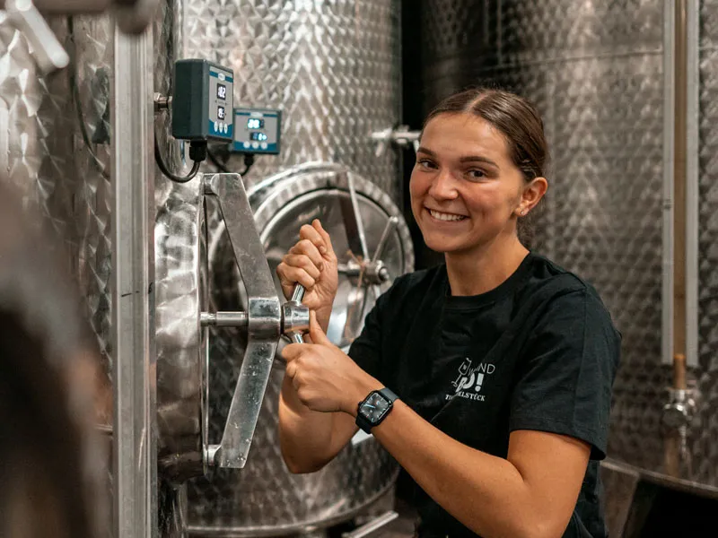

Weingut und Weinhotel in Ingelheim,mit Zeit für Wein, eine Nacht im Hotel, eure Feste und Tagungen.
Abends im Weinberg über IngelheimStiegelgasse 50 und 70
Ein Doppelstück lässt dem Wein Zeit.So planen wir auch mit euch.

Julia im Weinkeller
Doppelstück heißt das große Eichenfass mit 2.400 Litern, in dem wir gern ausbauen. Darin hat ein Wein Platz und Zeit, bis er nach seinen Trauben schmeckt.
Für euch heißt das: Ihr müsst noch nicht wissen, wie euer Tag aussehen soll. Erzählt uns den Anlass. Wir fragen nach und planen Wein, Raum und Zimmer mit euch, bis er nach euch aussieht.